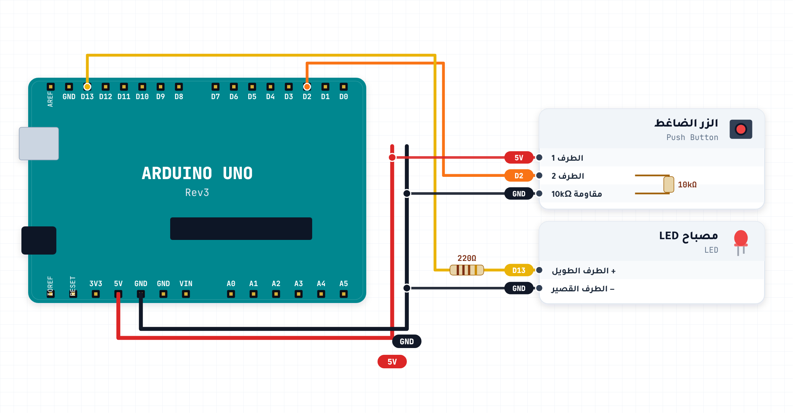

▶فيديو الشرح
ننتقل من المخرجات إلى المدخلات: الـ LED يضيء فقط ما دام الزر مضغوطاً.
1المكونات
ARDUINO UNOboardالزر الضاغطPush Buttonمصباح LEDLEDأسلاك توصيلJumper Wiresلوحة تجاربBreadboard
2مخطط التوصيل

اضغط على المخطط لتكبيره · نسخة SVG عالية الدقة
| القطعة | الطرف | يوصل إلى |
|---|---|---|
| الزر الضاغط | الطرف 1 | 5V |
| الزر الضاغط | الطرف 2 | D2 |
| الزر الضاغط | مقاومة 10kΩ | GND |
| الزر الضاغط | مقاومة 10kΩ | بين «الطرف 2» و «مقاومة 10kΩ» |
| مصباح LED | + الطرف الطويل | D13 عبر مقاومة 220Ω |
| مصباح LED | − الطرف القصير | GND |
3الكود
لا يحتاج هذا المشروع إلى أي مكتبة إضافية.
/* المشروع 12: زر التحكم الذكي (Push Button) كتاب: 38 مشروع في شهر — لؤي النصري (@robotlouay) التوصيل (مقاومة سحب للأسفل Pull-down): - طرف الزر الأول ← 5V - طرف الزر الثاني ← Pin 2 + مقاومة 10kΩ من Pin 2 إلى GND - LED ← 220Ω ← Pin 13 ، والطرف القصير ← GND */ const int BUTTON_PIN = 2; const int LED_PIN = 13; void setup() { pinMode(BUTTON_PIN, INPUT); // المقاومة الخارجية 10kΩ تُثبّت القراءة على LOW pinMode(LED_PIN, OUTPUT); } void loop() { int state = digitalRead(BUTTON_PIN); if (state == HIGH) { // الزر مضغوط digitalWrite(LED_PIN, HIGH); } else { // الزر محرر digitalWrite(LED_PIN, LOW); } } /* بديل بدون مقاومة خارجية: pinMode(BUTTON_PIN, INPUT_PULLUP); وصِل الزر بين Pin 2 و GND عندها تنعكس القراءة: LOW = مضغوط */
4كيف يعمل؟
- مقاومة 10kΩ تُبقي القراءة LOW
- الضغط يصل 5V إلى المنفذ 2
- digitalRead(2) == HIGH → إضاءة
- تحرير الزر → إطفاء
⚠ قبل توصيل الكهرباء: راجع كل سلك مع الجدول أعلاه، وتأكد من عدم وجود تماس بين 5V و GND. اختر اللوحة والمنفذ الصحيحين من قائمة Tools في Arduino IDE.